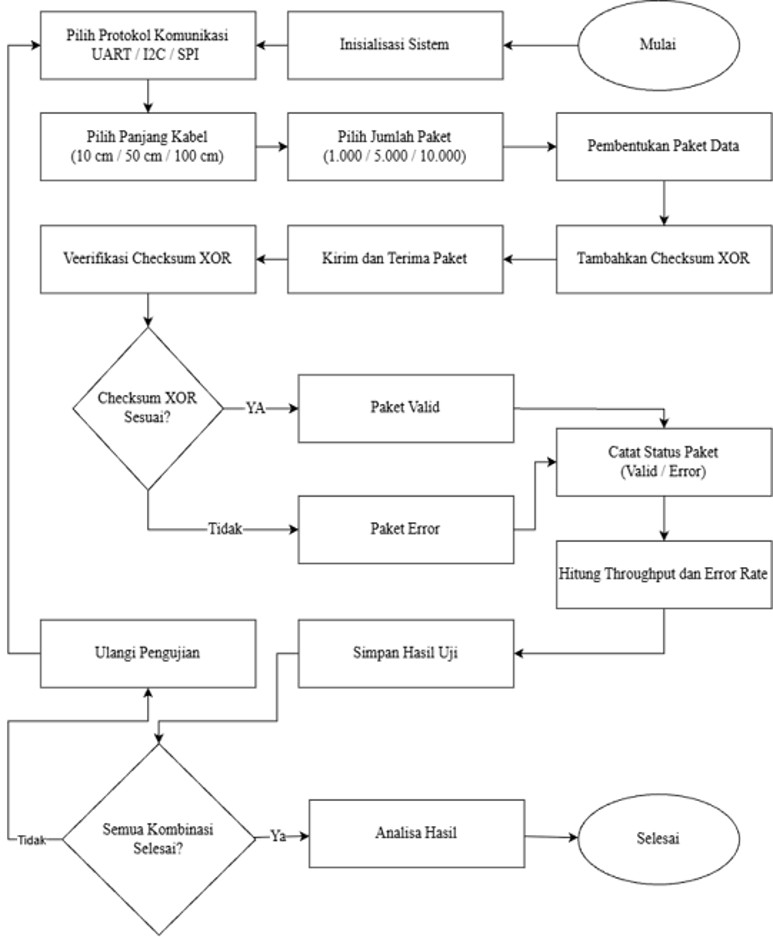
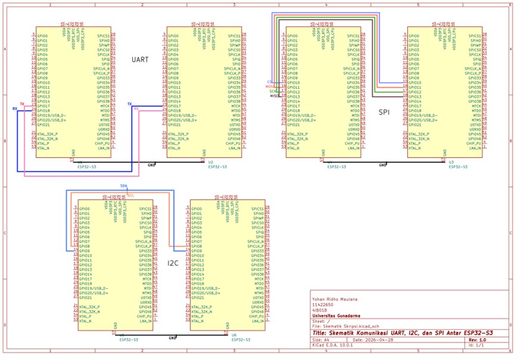
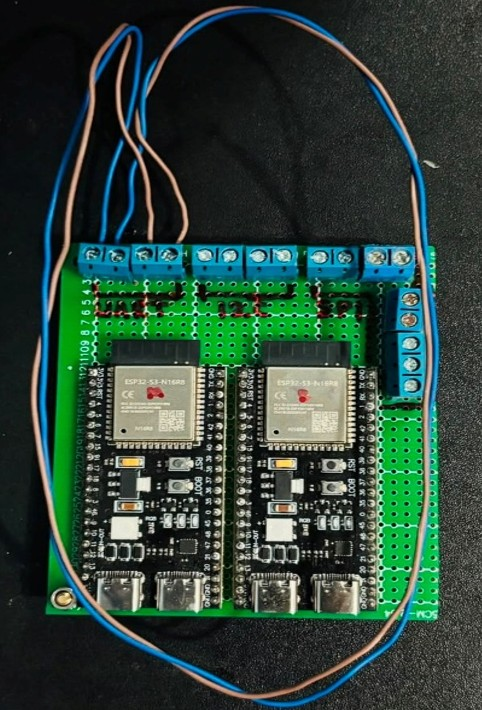
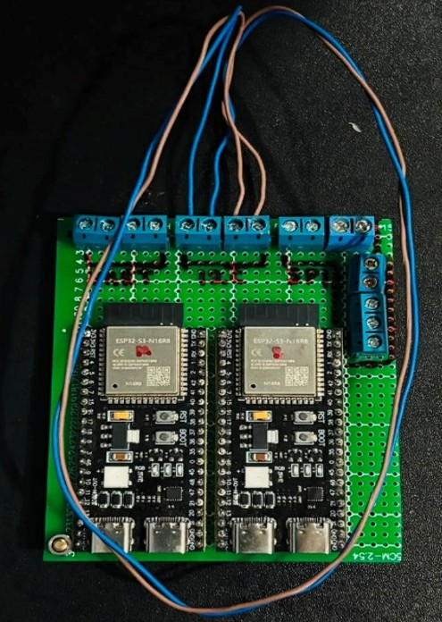
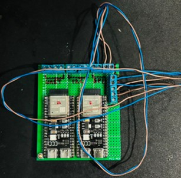
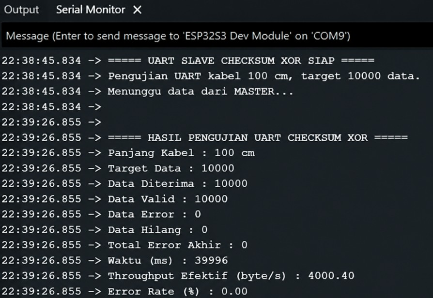
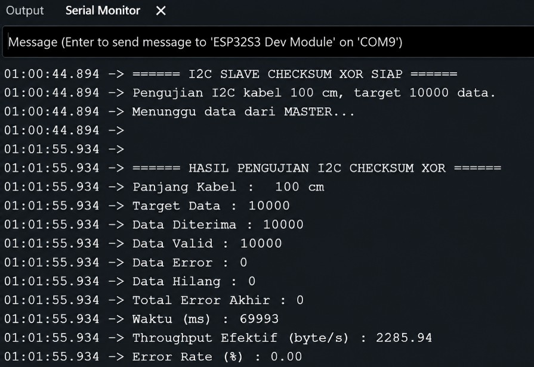
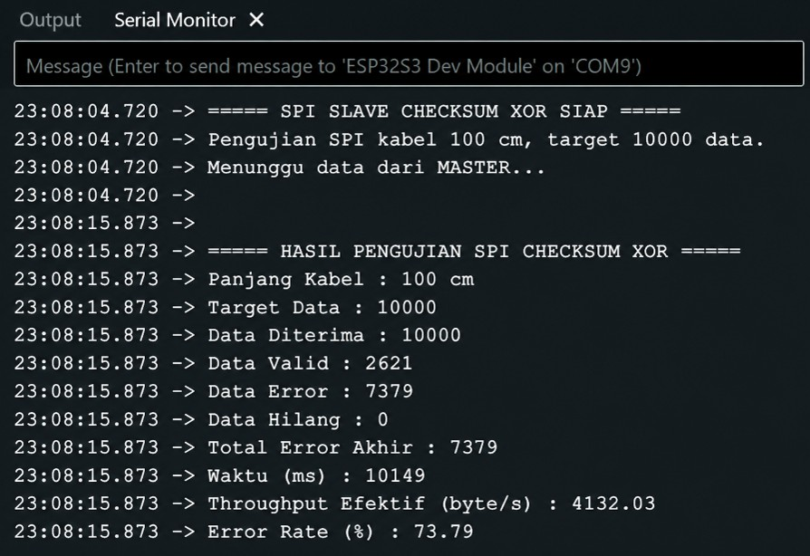

PROJECT 01
Analisis Komunikasi Serial ESP32-S3
Analisis pengaruh variasi panjang kabel terhadap performa komunikasi serial UART, I2C, dan SPI pada ESP32-S3 menggunakan metode Checksum XOR.
01
Overview
Project ini menganalisis performa komunikasi serial UART, I2C, dan SPI pada dua ESP32-S3 berdasarkan parameter throughput dan error rate.
Pengujian dilakukan dengan variasi ukuran data dan panjang kabel untuk melihat perubahan performa komunikasi serta pengaruh panjang kabel terhadap keberhasilan pengiriman data.
02
Tujuan
Menganalisis performa komunikasi UART, I2C, dan SPI pada ESP32-S3 berdasarkan throughput dan error rate.
Menganalisis pengaruh variasi panjang kabel terhadap performa komunikasi.
Menggunakan Checksum XOR untuk mendeteksi ketidaksesuaian data yang dikirim dan diterima.
03
Sistem & Perancangan

Alur Pengujian
Flowchart menunjukkan tahapan proses pengujian komunikasi serial mulai dari inisialisasi sistem, pemilihan protokol dan panjang kabel, proses pengiriman serta penerimaan data, hingga pencatatan hasil pengujian.

Skematik Wiring
Skematik menunjukkan konfigurasi hubungan antara transmitter dan receiver ESP32-S3 yang digunakan dalam pengujian UART, I2C, dan SPI.
04
Dokumentasi Hardware

Pengujian UART
Konfigurasi dua ESP32-S3 yang digunakan untuk pengujian komunikasi UART sebagai transmitter dan receiver.

Pengujian I2C
Konfigurasi dua ESP32-S3 yang digunakan untuk pengujian komunikasi I2C sebagai transmitter dan receiver.

Pengujian SPI
Konfigurasi dua ESP32-S3 yang digunakan untuk pengujian komunikasi SPI sebagai transmitter dan receiver.
05
Dokumentasi Serial Monitor

Hasil Pengujian UART
Tampilan Serial Monitor saat proses pengiriman dan penerimaan data pada komunikasi UART.

Hasil Pengujian I2C
Tampilan Serial Monitor saat proses pengiriman dan penerimaan data pada komunikasi I2C.

Hasil Pengujian SPI
Tampilan Serial Monitor saat proses pengiriman dan penerimaan data pada komunikasi SPI.
03
Metode Pengujian
2× ESP32-S3
Satu ESP32-S3 digunakan sebagai pengirim dan satu sebagai penerima data.
UART / I2C / SPI
Tiga protokol komunikasi serial digunakan sebagai objek perbandingan.
1.000 / 5.000 / 10.000
Pengujian dilakukan menggunakan beberapa jumlah paket data.
10 / 50 / 100 cm
Variasi panjang kabel digunakan untuk melihat perubahan performa komunikasi.
04
Format Data
| Bagian Paket | Ukuran | Fungsi |
|---|---|---|
| Penanda awal | 2 byte | Menandai awal paket data |
| Nomor urut | 2 byte | Mengidentifikasi urutan paket |
| Panjang payload | 1 byte | Menyimpan ukuran payload |
| Payload | 16 byte | Data utama |
| Checksum XOR | 1 byte | Nilai pemeriksa paket |
| Total | 22 byte | Ukuran keseluruhan paket |
Checksum XOR digunakan sebagai nilai pemeriksa untuk mendeteksi ketidaksesuaian data pada paket yang diterima.
Pembentukan Paket dan Checksum
packet[2] = (seq >> 8) & 0xFF;
packet[3] = seq & 0xFF;
packet[4] = PAYLOAD_SIZE;
for (int i = 0; i < PAYLOAD_SIZE; i++) {
packet[5 + i] = (uint8_t)((seq + i) % 256);
}
packet[PACKET_SIZE - 1] =
hitungChecksumXOR(&packet[2], 3 + PAYLOAD_SIZE);Pemeriksaan Checksum
uint8_t checksumTerima = packet[PACKET_SIZE - 1];
uint8_t checksumHitung =
hitungChecksumXOR(&packet[2],
3 + PAYLOAD_SIZE);
if (checksumTerima != checksumHitung) {
paketValid = false;
}Pada sisi master, nilai Checksum XOR dihitung dari bagian sequence, panjang payload, dan payload. Pada sisi slave, checksum yang diterima dibandingkan dengan checksum yang dihitung kembali menggunakan data paket yang diterima. Jika kedua nilai berbeda, paket dinyatakan tidak valid.
05
Parameter Pengujian
| Parameter | Keterangan |
|---|---|
| Throughput | Kecepatan data yang berhasil diterima selama proses komunikasi. |
| Error Rate | Persentase data yang mengalami ketidaksesuaian berdasarkan pemeriksaan Checksum XOR. |
| Panjang Kabel | 10 cm, 50 cm, dan 100 cm. |
| Jumlah Paket | 1.000, 5.000, dan 10.000 paket. |
| Protokol | UART, I2C, dan SPI. |
06
Hasil Pengujian
Hasil berikut merupakan nilai rata-rata performa masing-masing protokol berdasarkan pengujian yang dilakukan.
| Protokol | Throughput Rata-rata | Error Rate |
|---|---|---|
| UART | 4.001,71 byte/s | 0,00% |
| I2C | 2.286,71 byte/s | 0,00% |
| SPI | 6.534,92 byte/s | 24,33% |
Performa SPI Berdasarkan Panjang Kabel
| Panjang Kabel | Throughput | Error Rate |
|---|---|---|
| 10 cm | 7.909,71 byte/s | 1,16% |
| 50 cm | 7.379,80 byte/s | 11,42% |
| 100 cm | 4.315,24 byte/s | 60,41% |
07
Project Summary
Project ini memberikan pengalaman dalam implementasi komunikasi serial menggunakan ESP32-S3, pengujian beberapa protokol komunikasi, pengolahan data hasil pengujian, serta penerapan Checksum XOR sebagai metode pemeriksaan data.
Pengujian menunjukkan adanya perbedaan performa throughput dan error rate antara UART, I2C, dan SPI pada variasi panjang kabel yang digunakan.